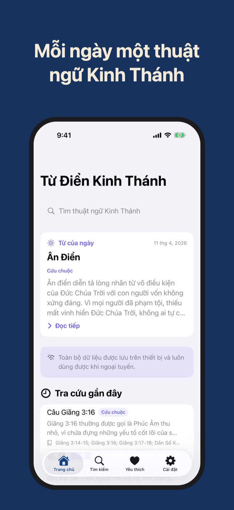
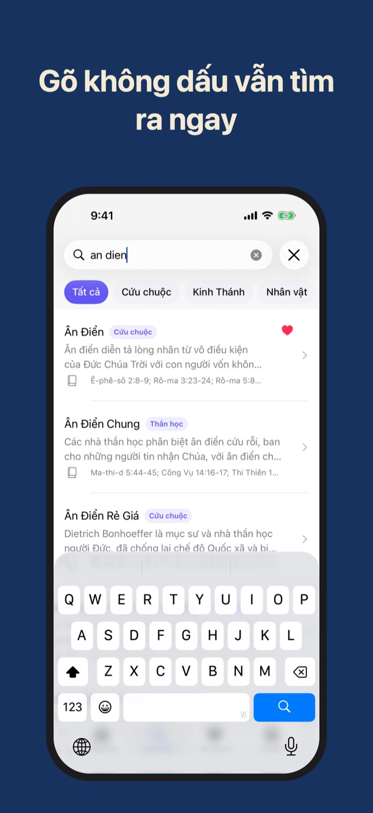
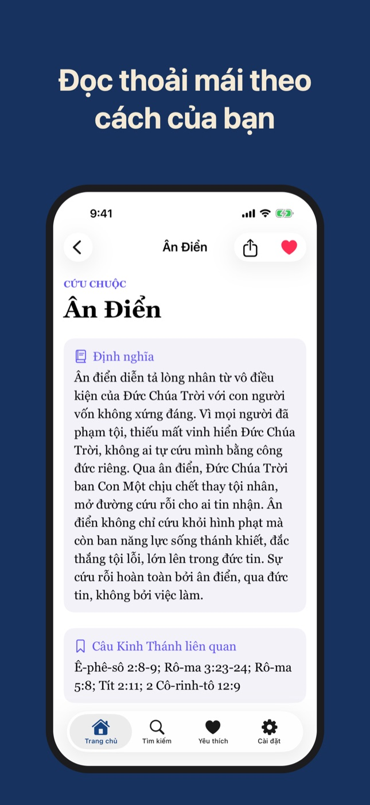

Từ Điển Kinh Thánh
1000 thuật ngữ, không cần mạng
Tra nhanh 1000 thuật ngữ Kinh Thánh bằng tiếng Việt, gõ không dấu vẫn ra. Mỗi ngày một từ mới, chọn cỡ chữ và phông chữ dễ đọc.
Ứng dụng cho iPhone · sắp có trên App Store



1000 thuật ngữ, 5 nhóm
Nhân vật, địa danh, sự kiện, dụ ngôn và giáo lý trong Kinh Thánh, xếp vào Cứu chuộc, Kinh Thánh, Nhân vật, Thần học và Đời sống đức tin. Mỗi mục có định nghĩa và các câu Kinh Thánh liên quan.
Gõ không dấu vẫn tìm ra
Tìm theo tên, một chữ trong định nghĩa hay một câu như "Rô-ma 8". Gõ "an dien" là ra Ân Điển, và mục đúng tên luôn đứng đầu.
Từ của ngày
Trang chủ mỗi ngày giới thiệu một thuật ngữ, đi hết cả 1000 từ rồi mới lặp lại.
Cỡ chữ và phông chữ của bạn
Tăng giảm cỡ chữ cho cả ứng dụng, chọn một trong sáu phông chữ có sẵn trên iPhone. Đổi là thấy ngay, lần sau mở vẫn giữ.
Yêu thích và chia sẻ
Lưu những từ bạn hay tra; gửi một thuật ngữ kèm định nghĩa và câu Kinh Thánh cho người thân qua bảng chia sẻ của iPhone.
Không cần mạng
Toàn bộ từ điển nằm sẵn trong ứng dụng. Không tài khoản, không quảng cáo, không thu thập dữ liệu.